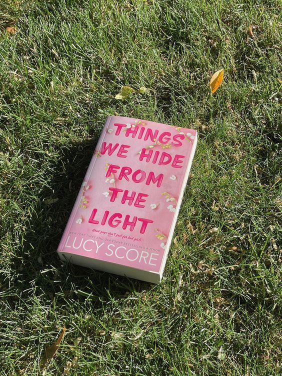
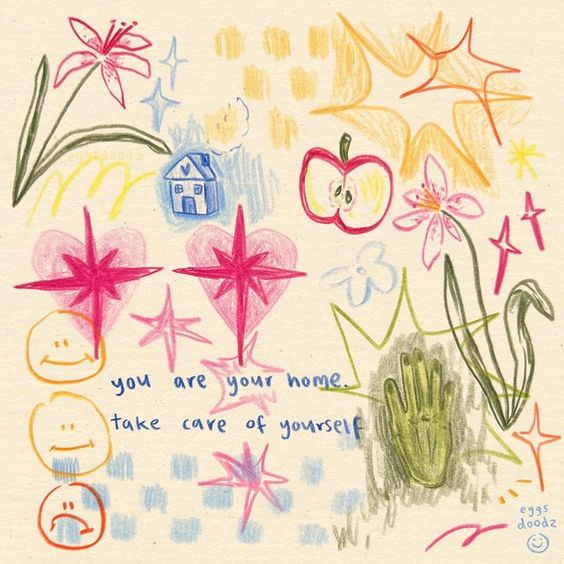

Welcome to My Hobbies
Hello! I'm Dina Batrisyia, and this is my personal space on the web where I share my love for music, books, and poetry. Feel free to explore and enjoy!
Music
Music has always been a huge part of my life. Here are some of my favorite tracks and albums.
Books
I enjoy losing myself in an incredible book. "Things we hide from the light" by Lucy Score is my favorite book. In this book, the town's police chief, Nash, finally faces his past trauma and starts the process of healing—both mentally and physically. As they work through their past challenges together, his relationship with Lina, who has been a source of both challenge and support, grows. They manage to strike a balance between their growing love for one another and their personal demons.
Poems
Have you ever gotten lost in the woods, surrounded by thousands of trees, overwhelmed by nature's exquisite beauty; felt the gentle touch of raindrops on a rainy day, getting you wet drop by drop, and the fragrance of the soil just after it ended; or heard terrifying thunders that made your heart pound during stormy nights?
Have you ever fallen in love with (or loved someone) who made you feel alive? Their smile, eyes, voice, touch, presence, and a hundred million other things come to mind when you think of that person, and words fail you when it comes to expressing your love for them.
Have you ever had an irrevocable loss, a childhood dream that got shattered, the dream job you never got, plans that never became real, the crushing pain that accompanied with you time to time. Have you ever lived by clinging on to a fine gossamer of hope or totally hopeless about everything that mattered to you?
Besides reading books, I also enjoy reading poems. People keep asking me why I enjoy reading poetry. I said, because it depicts the pain of heart with utmost subtlety like no other form. It is the voice of the heart of the dreamers, the heart broken, the introverts in its purest form. It says all that is unheard or unsaid. It is a voice that comes directly from heart and touches our soul.
